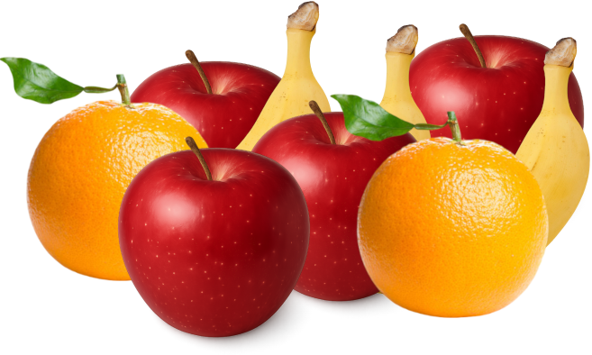
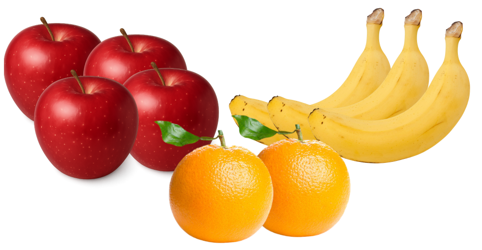

1a. 5 + 7 = 12
1b. 2x + 4x = 6x
1c. 3x2 + 5x2 = 8x2
2. For each pair, how are they alike and how are they different?
2x and 5x
x and x2
4y and 4x
2x and 5x: same variable, different coefficients - like terms. x and x2: same letter, different exponent - not like. 4y and 4x: same coefficient, different variable - not like.
3. Why would we want to rewrite an expression in a simpler form?
A shorter expression is quicker to evaluate, easier to compare, and easier to solve.
5x and 3x L
7 and −3 L
2y3 and y3 L
8xy and 2yx L
2x and 3y N
4x2 and 2x4 N
7 and −3x N
3x2y and 3xy2 N
a. 5 and −42 L
b. 32y and 32x N
c. 9x2y3 and 9x3y2 N
d. −13a4 and 1.5a4 L
e. 252xyz and 525yxz L
1. Sort - put like terms together
2. Group - use parentheses around each group
3. Add - add the coefficients


| Sort by type | a: 9a, −3a, 2a, −4a b: 8b, b, −6b c: 4c, −2c |
| Group like terms | (9a − 3a + 2a − 4a) + (8b + b − 6b) + (4c − 2c) |
| Add each group | 4a + 3b + 2c |
| Sort | x2: 3.5x2, −4.5x2 x: −1.5x, 5.5x, −4.0x constants: 2.5, −0.5, −2 |
| Group | (3.5x2 − 4.5x2) + (−1.5x + 5.5x − 4.0x) + (2.5 − 0.5 − 2) |
| Add | −x2 (the x terms and the constants both cancel) |
z3: 5 + 5 = 10 z2: −3 − 1 = −4 z: 2 − 1 = 1
10z3 − 4z2 + z − 8
Simplified: 7x − 4
Check the original at x = 2: 10 − 12 + 4 − 7 + 12 + 3 = 10
Check the simplified at x = 2: 7(2) − 4 = 10 ✓
3b + 4b = 7b, −2 − 5 = −7, so 7b − 7
Check at b = 1: 3 − 2 + 4 − 5 = 0 and 7(1) − 7 = 0 ✓
1. 6x + 4x = 10x
2. 5a − 3a + 2 = 2a + 2
3. 2x + 3 + 5x − 1 = 7x + 2
4. 9y − 2y + 4 + y = 8y + 4
5. 3b + 2b + 6 − 2 = 5b + 4
6. 4m − m + 7 − 3 = 3m + 4
7. −2x + 7 + 5x − 3 = 3x + 4
8. 8y − (2y) + 1 − 5 = 6y − 4
9. −x − x + 4 − 2 = −2x + 2
10. 5p − 9 + 3 − 2p = 3p − 6
11. (2x + 5) + (x − 3) = 3x + 2
12. (4y − 7) − (2y + 1) = 2y − 8
13. −(3x − 2) + (x + 5) = −2x + 7
14. (6 − 2m) + (m − 9) = −m − 3
15. 2x2 + 5x − 3 + 4x2 − x + 1 = 6x2 + 4x − 2
16. 7a2 − 2a + 4 − 3a2 + a − 6 = 4a2 − a − 2
17. 3xy + 2x − xy + 5 − x = 2xy + x + 5
18. 5t2 + 3 − 2t + t2 + 2t − 8 = 6t2 − 5
| Pair | Simplify each side | Equivalent? |
|---|---|---|
| 19. 2x + 4x + 3 and 6x + 3 | 6x + 3 | 6x + 3 | yes |
| 20. x − 1 + x + 3 and 2x + 4 | 2x + 2 | 2x + 4 | no |
| 21. 4y + 6 − 3y + 2 and y + 8 | y + 8 | y + 8 | yes |
| 22. 3x + 5 + 2x − 1 and 5x + 4 | 5x + 4 | 5x + 4 | yes |
Answers vary - for example 3x + 2 + 4x − 6.
Combining like terms gives 7x − 4, so it is equivalent for every value of x.
For example 3x and 5x - both are 0 at x = 0.
One test only shows they agree at that single value; equivalence means agreeing at every value.